Portfolio


Improved PRoPHET Routing Algorithm
The Delay Tolerant Network paradigm was proposed to address communication issues in challenged environments with sparse intermittent or no end-to-end connectivity. In Vehicular Delay Tolerant networks, some nodes follow a fixed path while others follow a random path.
In our thesis, a new protocol was proposed by making changes in PRoPHET Routing Algorithm to maximize the delivery probability while minimizing the number of messages dropped as well as the overhead ratio.
Introduction to PRoPHET Routing
PRoPHET is a probabilistic routing protocol that uses the history of previous encounters with the other nodes. A probabilistic metric called ‘Delivery Predictability’ P (a, b) is established at every node ‘a’ for each known destination ‘b’. On encounter, nodes exchange the summary vector & probability value for the destination node. If Delivery Probability of the latter node is better than the former, the message is transmitted.The DP metric is updated whenever 2 nodes encounter each other, and therefore the nodes that are frequently encountered have a high DP.
P (a, b) = P (a, b)old + ( 1−P (a, b)old ) × Pinit
where Pinit is the initialization constant.
The Delivery Predictability ages when a pair of nodes does not encounter each other for a long time.
P (a, b) = P (a, b)old × γk
where γ [0, 1) is the aging constant,
and k is the #time units elapsed since the last time the metric aged.
Proposed Method
In the real world, some nodes move around in predictable path while some nodes tend to move randomly.Consider this simulation environment where different classes of nodes interact and relay messages.
1. Pedestrians (P)
2. Cars, buses and trucks (C)
3. Trams and trains (T)

Delay tolerant network simulation in One Simulator
The trams and trains use Map-based Mobility for moving in the Simulator and hence have a predictable path; while other groups like pedestrians and cars use Shortest Path Map-based movements, routes for which vary with the destination.
So, the probability of a random node meeting the tram node is higher than that of two random nodes coming into the communication range of each other. Hence, we proposed changing the value of the initialization and the aging constant for the nodes with predictable path to factor in this predictability.
We devided the groups in two sets –
1. Opportunistic: The nodes that do not have a predictable path like pedestrians and cars.
2. Predictable: The nodes that do have a predictable path like the trams.
While Opportunistic nodes use the original constants, the metrics for Predictable group is updated as
P (a, b) = P (a, b)old + ( 1−P (a, b)old ) × Pinitnew
P (a, b) = P (a, b)old × γnewk
Pinitnew and γnew can be derived through a genetic algorithm method involving various simulations, seeded at an interval of 0.01.
Commonly used PRoPHET implementations 0.75 and 0.98 as the initialization & aging constants. Our simulations proved that the delivery probabilities give the best results with 0.85 and 0.99 for predictable groups.
Results
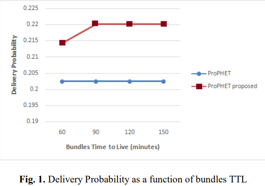 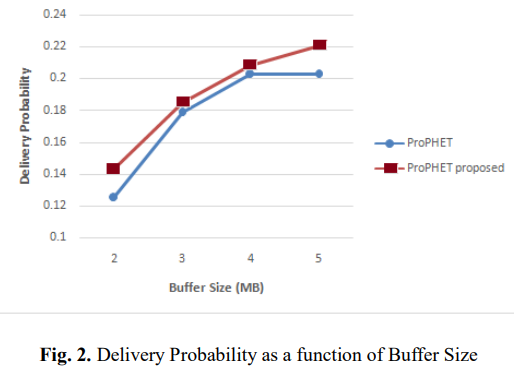Fig. 1 shows the comparison of Delivery Probability as a function of Bundles Time-to-live
and Fig. 2 shows the comparison of Delivery Probabilities as a function of Buffer size
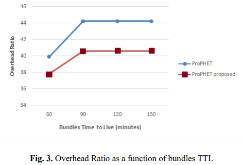 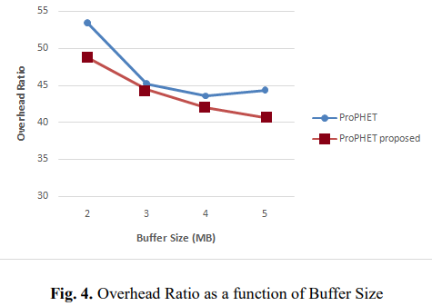
Overhead is the ratio between the total number of transmissions over the number of delivered messages
Fig. 3 shows the comparison of Overhead as a function of Bundles Time-to-live
and Fig. 4 shows the comparison of Overhead as a function of Buffer size.
Dashboard Design
Part of my responsibilities as an analytics professional is to build visualizations that help tell a story.
Here are a few examples, helping the business make better decisions.
An introduction to Swiggy Stores
Swiggy Stores is a hyper-local delivery service offering instant delivery of just about anything from physical stores. Customer opens the Swiggy app and selects the store category (ex medicals, supermarket, etc. ), adds desired items from the store of choice and checks out. Swiggy Delivery partner receives the order, picks the items from the stores and delivers it to the customer's doorstep.Here's an oversimplified customer journey map:

Well, more or less. Let me elaborate on a particular complexity. Most SKUs (items) are catalogued for the partner stores. Catalogued items benefit from an image & a description, easier discovery by delivery partner at the store and more importantly, structured order flows.
Customers have the freedom to request items, not listed on the store catalogue- in a free text field with optional pictures. Moreover, a similar items list can be created for any (non-partner) store in the customer's vicinity. These features trigger an unstructured order flow, where delivery partner tries to find these items at the store premise and requests an item confirmation from the customer, increasing the number of interactions/touchpoints.


The promise of getting ANYTHING delivered incontrovertibly comes at the expense of reduced efficiency (and worse unit economics), increased touchpoints and a riskier fulfilment guarantee.
Solution
To provide a better ordering experience, we need to continually update our catalogue to match customer's needs. I designed a dashboard that would highlight products that are frequently added as free text, so we can prioritize addition of these items to the catalogue. I also added a visualisation to indicate relative frequencies of these items for illustration and a quicker assessment.
The next step towards improving catalogue was to understand unmet needs through 'Search'. We needed to understand which keywords returned no match in the catalogue and their relative importance to all search results. So, I designed a dashboard to illustrate null search keywords and their distribution. I added another chart to map the keyword against the time of search. Ex. birthday cake is only searched in the late evening or night slots.
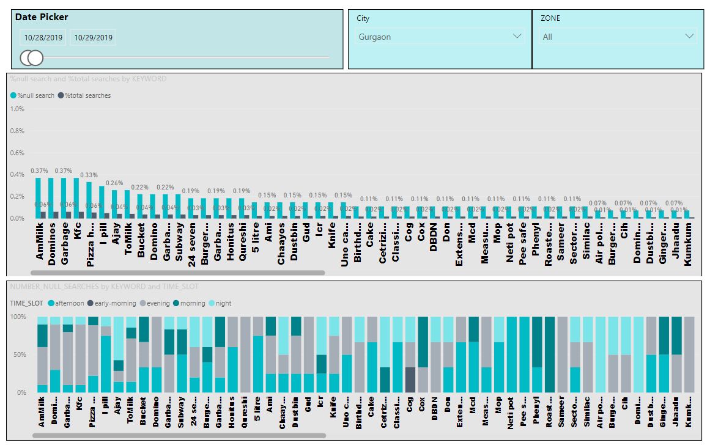
A means to measure business performance was to create a dashboard, projecting #orders, average order value, cancellation & underlying reasons, ratings and other metrics for the different store categories.
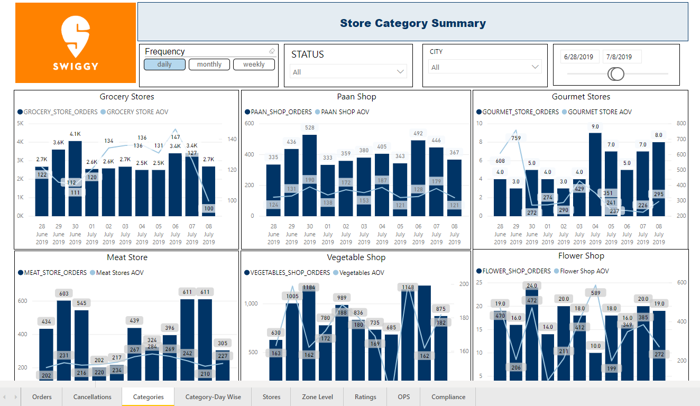
Anomaly Detector
A big piece of the fraud & abuse pie at Swiggy, is restaurant fraud.
Restaurants engage with swiggy on a per-order commission criteria along with incentives on high volume and quality.
In order to scale faster, swiggy often seeds discounts on orders from its own pockets. Some restaurants see the swiggy funded discounts as an opportunity- they work out the math on delivery charge, commission, discounts & monthly incentives, placing the orders themselves to juice more money from the system.
It goes beyond that, for some. In anticpation of demand for some dishes, they'd place the orders at restaurant's own address and serve these items to dining customers.
We had built our fraud detection system before with robust rules, incorporating everything we knew on how each entity abuses the system. But such a system is as good as the KNOWN part of the problem.
In an ever evolving problem like fraud, we frequently discover novel abuse cases, making us wonder how much of the abuse is yet to be solved for! One way to treat the unknown, is to look for anomalies in business parameters, instead of pre-defined rules that only detect known use-cases.
For our anomaly detection framework, we incorporated an Exponential Weighted moving average (EWMA) statistic that flags any movement beyond the thresholds. It accounts for business volatility by giving importance to the more recent values across time.
Consider the below chart as an example:

With 'x' as values on the graph,
Moving average values (EWMAs) are represented as the green curve,
and blue lines symbolizing the thresholds.
Calculations
EWMAt = λYt + (1−λ)EWMAt-1
where
EWMA0 is the mean of historical data
Yt is the observation at time t
0<λ≤1 is a constant that represents the recency factor
The control limits (thresholds) are calculated as:
UCL = EWMA0 + k.sewma
LCL = EWMA0 - k.sewma
with s2ewma as the variance of EWMA statistic, derived from s2, variance of historical data
s2ewma = s2.λ/(2-λ)
Methodology
Use cases with a hypothesis in place- We relied on signals like time taken from DE Assignment to arrival at restaurant, dish preparation time, time taken from order pickup to delivery, Last mile distance, etc for indicating Restaurant-DE collusion.
An abberation in all the signals indicate that:
a.) DE is already at the restaurant, since he's aware of the upcoming order.
b.) Food isn't actually being prepared. These are shell orders.
c.) DE is marking delivery soon after pickup as either the delivery address is also the restaurant location
or, he doesn't actually need to deliver at the dummy customer location.
For restaurant placing self orders with or without DE involvement, we looked at signals like
time between order pick up and delivery
average of max #orders from the same customers
Average discount applied
ordered to acceptance time
speed of last mile delivery
and various other intuitive as well as non-intuitive metrics, for unprejudiced insights.
Results
The framework helped us highlight restaurants engaging in fraudulent activities; but sometimes, the benefits cascaded in other verticals- like CX.
An abberation in last mile increase happened when 'Long distance' orders were enabled on the platform. The Last Mile abberation was correlated with a surge in bad rated orders. Further investigation lead to the conclusion that long distance should factor in the item's cuisines too; not just the primary cuisine type of the restaurant. Consider the state of an ice-cream ordered from a pizza place, travelling 6 miles before reaching the doorstep.
Performance Alerting Framework

Swiggy Stores is a new launched hyperlocal service offering instant delivery of just about anything from physical stores. Customer opens the Swiggy app and selects the store category (ex medicals, supermarket, etc. ), adds desired items from the store of choice and get the items delivered to the doorstep.
Objective: While most Key performance Indicators (KPIs) attain a stable state as the business saturates, a new service offering is very volatile, reacting quickly to even the smallest of changes in processes, product updates or expansion. In this project, we defined some of the metrics that are crucial as indicators of performance or of abnormality.
Basis these metrics, we had setup a daily montioring system- one that observes the trend in the metrics, looks for values beyond the thresholds and notifies the right consumer for the actions needed. Thresholds were defined using exponential weighted average, factoring in the recency of the values, and tuned as per business expectations of that metric.
An R script was scheduled with a daily refresh time to check if the values for the preceding day were within the threshold bounds.
For the metrics out of the bounds, the script would trigger a mail with this list as the body, notifying relevant teams of the aberrations.
For instance, this system played an important role in identifying geographies with poor order fulfilment, highlighting gaps in item availability to the supply team. It also revealed areas with consistent delayed deliveries, calling to attention a need for delivery partner training in the areas.
Multiple Accounts Fraud
When Swiggy scaled to Tier 2 cities, it observed an erratic growth within days. What seemed like a head-start provided by the popularity in metropolitans, had a rather unusual statistic to go with it. The adoption seemed to bring new users exponentially, but the number of devices weren’t growing as fast.
Coupon abuse was at play here. Customers would create multiple accounts to redeem new user coupons and referrals. Not acquiring any valuable customers to the platform while bleeding cash- things needed to be addressed quickly.
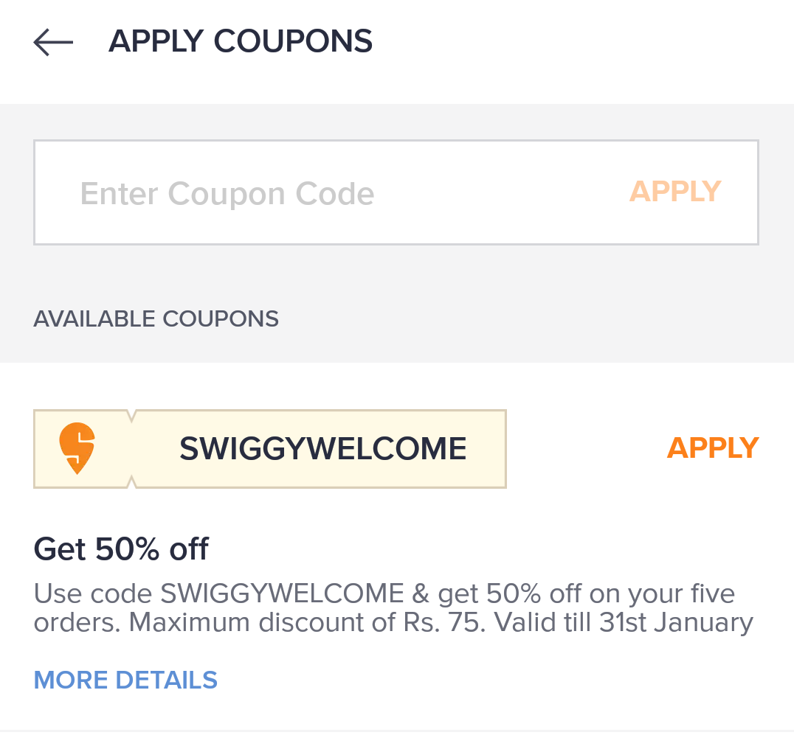
Solution
Throttle device logins to discourage multiple accounts for coupons. But how many accounts should be allowed?How does a company that obsesses about customer experience, decides the right account limit?
Limit too strictly and you might find yourself affecting the genuine users! Make it lenient and it won’t attack the majority of abusers!
We decided to approach the solution analytically- Sizing the burn against login pareto and assessing the value each bucket of consumers bring to the platform.
We looked at secondary and tertiary users from these devices and compared their Order size, coupon redemption and platform repeat & retention against primary users. This would validate our hypothesis that the intent of multiple logins were coupons and help us with revenue impact of going ahead with each limit.

Result
The intent of abuse was definitive with 3rd login and indicative with 2nd. Moreover, both secondary/tertiary users seemed to bring less revenue to the platform. Limiting to 1 user per device was concluded as affecting genuine use cases.Account limit was eventually decided as 2/device.
Marbellous Game

Marbellous is a casual puzzle game where the player interacts with marbles on a restricted tile platform. The goal is to align similar colored marbles in minimum moves possible to attain a higher score.
Abstract
Video games are essentially a set of rules governing a player's interaction with the system, attemptng to solve a puzzle, accomplish certain goals, achieve a high score or immerse in a story. Marbellous is a puzzle game designed as a windows application, which lets the players move marbles on a tile platform.The system has three rules:
1. Move all marbles in the direction specified by the player.
2. Stop the marble on collision with a boundary.
3. On encounter with another marble,
Stop the marble if they don't share the color.
Remove both marbles from the platform, if they do.
The goal is to remove all the marbles from the platform to complete a level and the scoring mechanism dictates the minimum moves for each rating.
This is an early sketch I used, to demonstrate the game mechanics before commencing the development.

Programming
The game was programmed using C++ language. I used SFML (Simple and Fast Multimedia Library) for windows, to accept user inputs, render 2D graphics (textures, sprites and text) and integrate music.Microsoft Visual Studio was the choice of IDE/code editor for the game development.
The program utilizes key concepts of Object Oriented Programming (OOPs) like inheritance, abstraction, and encapsulation. Entities called 'Class' wrap data and code into a cohesive unit. For example, the Marble Class has properties like Postition, marble-type, sprite(image)and direction.
Once all classes and functions (movement, collision check, score update, class field updates, etc) are defined, a looping script called the game loop is created that accepts user inpts and run through all the functions like moving marbles and checking collisions, till a stop condition is satisfied, like level completion or out of moves.
Collision Logic
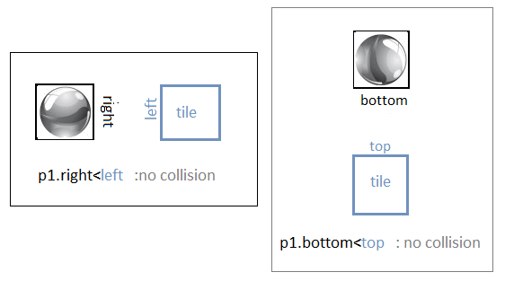
Collision between marbles:
If(collision)
{
If(color_matches)
Remove marbles from map.
Else
Set movement_speed = 0
}
Loading Map: A 2D matrix of 1s and 0s is used for permeable and non-permeable tiles.
Loading Marbles: A text file with #marbles, moves count for each rating, and a 2D matrix with co-ordinates & marble-type for all marbles.
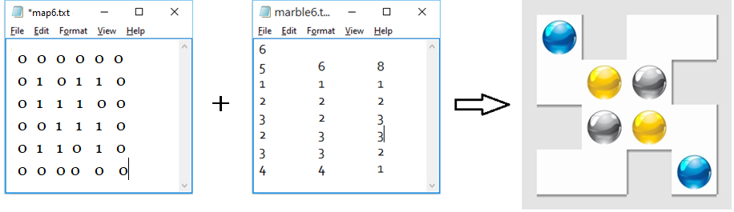
Prototype to Final build:
Once the key components and game mechanics started working, I made a few important additions and enhancements.
Adding the scoring mechanism.
Updating native renders to marble sprites.
Adding game menu, level selection and game saves.
Adding shadows to the tiles.
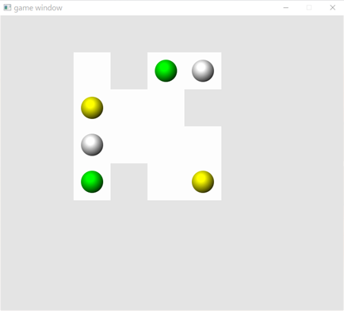 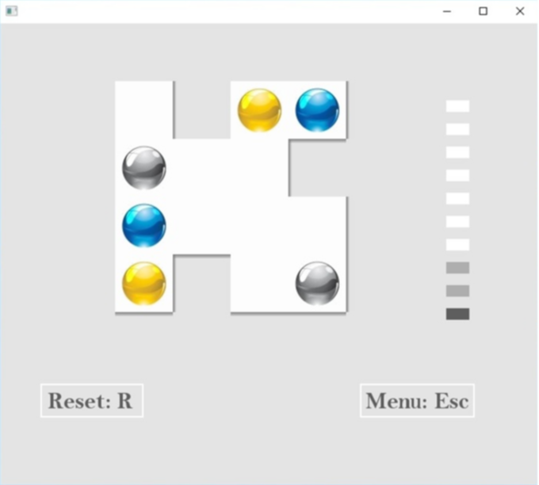
Game code: You can check out the game code at this link, and the project details on my github profile .
Watch the game teaser below, or on .
Download the game from here